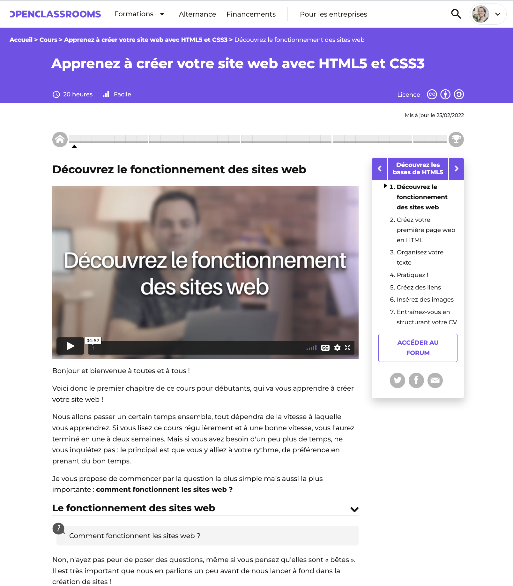
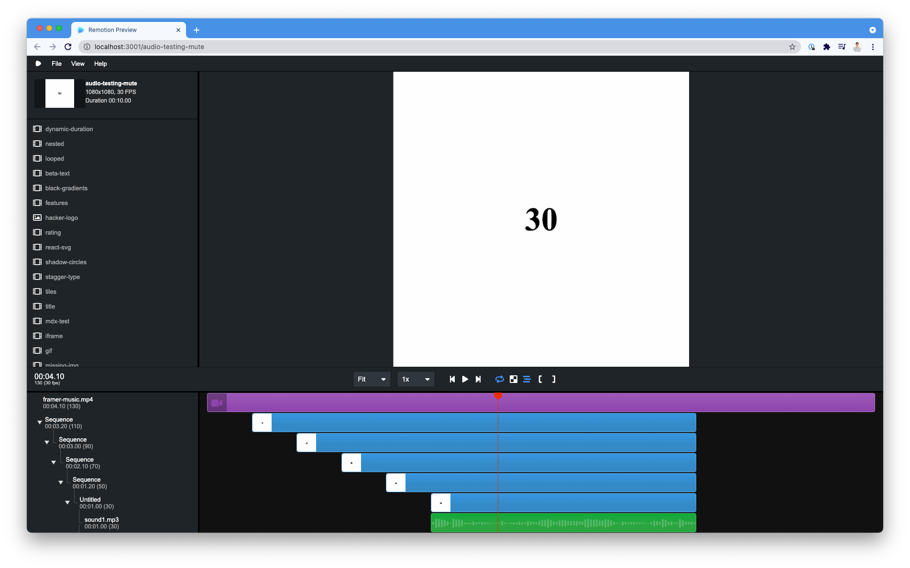
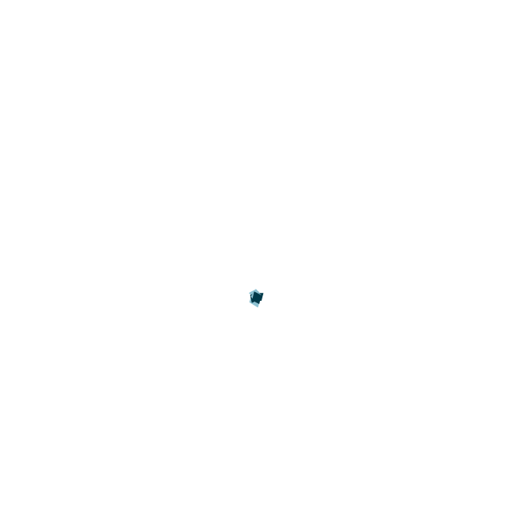

Remotion
et si on créait des vidéos avec React
React Nantes - 28 avril 2022
Johan Soulet
- Software engineer chez OpenClassrooms

- @johansoulet
Un peu de contexte...
Pourquoi je me suis intéressé à Remotion?
🐣
Sortie de la v1 début 2021
Pas mal de bruit dans l'écosystème
Un retour étonnant
- Partagé sur le channel #front-end
- Est-il possible d'automatiser une partie de l'édition des vidéos ?
Peut être peut-on lui trouver un intérêt finalement
LET'S TRY 👯♂️
LET'S TRY 👯♂️

Proof of concept
une vidéo Tik-Tok inspirée de Spotify Wrapped...
Qu'y a-t-il sous le capeau ?
Inspiré par les dessin-animés
Une vidéo est un ensemble d'image, jouées les unes après les autres
- #REACT Décrire l'interface en fonction du temps
- #PUPETEER Générer les vues et prendre des screenshots
- #FFMPEG Aggréger les images et flux audios en une seule vidéo
Des vues stateless
La "frame" est le coeur de la conception
Imaginer à l'avance ce qui se passera à la frame 1, 2... n
Calculer combien de frames <RandomComponent/> doit être affiché
Fondations
<Composition/>
Le point d'entrée de la vidéo
<Sequence/>
Une des étape de la vidéo
Les composants multimedia
Remotion doit attendre le chargement des elements avant de faire un screenshot
- 🖼
<Image src="remotion-logo.jpeg" /> - 📼
<Video src="cute-kitten.mp4"/> - 🎶
<Audio src="rock-soundtrack.mp3"/> - 🌎
<IFrame src="www.lemonde.fr/" />
Interface de développement
yarn starthttp://localhost:3001

Animations
useCurrentFrame()
frame = 6
opacity = 0.2
frame = 15
opacity = 0.5
frame = 30
opacity = 1
frame = 60
opacity = 1
interpolate
interpolateColors
depuis la v2 on peut même interpoler les couleurs CSS
La physique "spring"
(🇫🇷 spring = ressortpour créer des animations plus fluides
 A Friendly Introduction to Spring Physics, by Josh W. Comeau
A Friendly Introduction to Spring Physics, by Josh W. Comeau
Data fetching
🏃♂️ mettre en pause le rendering pendant le chargement des données
🪝 hooks delayRender, continueRender
- Appel de
delayRenderau premier render du composant - Appels API asynchrone
- Stockage de la donnée en local
- Appel de
continueRender
Plugins
- Gifs
- ThreeJS
- Lottie
Lottie
- 1. Créer une animation complexe avec AfterEffect
- 2. L'exporter en JSON
- 3. Intégrer <Lottier/> de remotion-lottie
- 4. Enjoy! 🎉
- (alt) Télécharger des JSON sur Lottiefiles.com

Conclusion
❌ Pourquoi ne pas utiliser Remotion ?
- Une vidéo unique
- Un motion design complexe
- Effets spéciaux
✅ Pourquoi utiliser Remotion ?
- Générer des vidéos par lots
- Le contenu provient d'une API
Pour aller plus loir
Composant
Créer des vidéos à la volée
<Player/>Quelques inspirations: remotion.dev/showcase
Merci 🙌
created with reveal.js